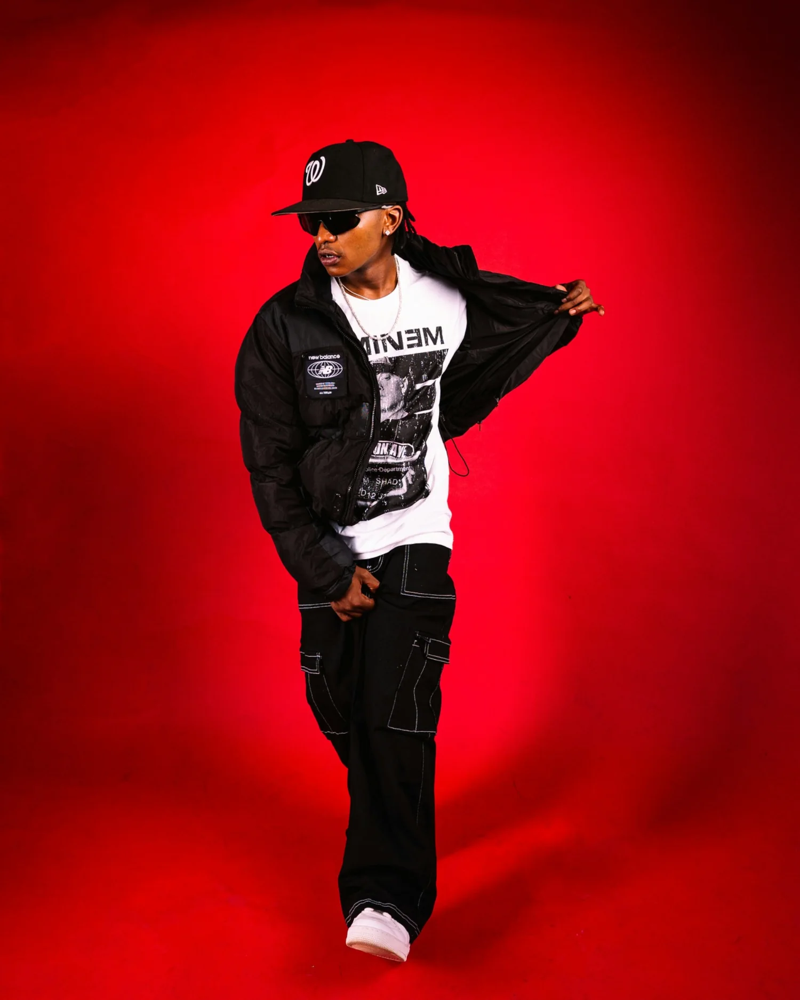

Bring the vocal into the record
Shape tone, dynamics, editing, effects and space so the performance feels connected to the beat and confident in the mix.
Pro-Sessions · Rap / Hip-Hop · Worldwide · pro-sessions.com
You already have the beat, the bars, the vocals or a rough demo. We help shape what is already working into a finished record — with focused vocal production, added production, mixing and mastering built around your sound.
Build on what already works
The strongest upgrades are often the ones that bring the whole record into focus. Vocal production, arrangement, added production, editing, effects and mix decisions can all create more impact while keeping the identity of the track.
Shape tone, dynamics, editing, effects and space so the performance feels connected to the beat and confident in the mix.
Doubles, adlibs, transitions and focused production choices can add lift, contrast and energy where it matters most.
Arrangement shifts, additional drums, bass, synths and details can build energy across the track while keeping its original feel.
Clarity, punch, depth and final mastering bring the vocal and production together as one complete record.

Three ways to start
Start with the version you have now. Send the track and we can recommend the approach that will make the strongest difference.
Your beat and song already have direction. We shape the vocal performance, layers, effects and mix so everything feels like one record.
Your track already has an identity. We develop the vocal and production together to create more impact, movement and finish.
You have lyrics, an idea, a demo or a direction. We build the complete production around your voice, identity and reference points.
Every track is different. The scope is built around what will make the biggest difference for your song — with a clear plan and quote before the project starts.
One complete record
Every decision should support the artist, the song and the energy of the record. The result should feel bigger, clearer and more complete — while still sounding like you.

A direct studio relationship
From the first review to the final master, you work directly with Fredrikstad Studio. We listen to your track, references and direction, then shape the project around your sound and your goals.
How it works
Start with what you have. We listen to the track and recommend the next step based on your music, your goals and the strongest opportunities in the production.
Send a rough mix, MP3 or private link. A stereo beat plus vocals is enough for the first review. If you have stems, tell us that too.
We listen to the track, your references and what you want the next release to achieve, then identify where our work can make the biggest difference.
You receive a suggested approach, what is included and a project quote before any production work starts.
We develop the agreed production, vocals, mix and master with direct feedback and communication throughout the project.
Before you send it
A rough track is enough for the first review. The technical details can be clarified after we hear what you are working with.
Yes. You are responsible for having the necessary licence or permission for the beat and the intended release. If stems are available, they can give us more production and mixing flexibility.
Yes. A stereo beat and separate vocal tracks are enough for the first review, and many projects can be developed effectively from there. Beat stems give us even more flexibility when available.
Yes. A project can include vocal production, arrangement changes, additional musical or programmed elements, mixing and mastering — depending on the track and the direction you want.
Yes. Send what you have for the first review. For the final production, Fredrikstad Studio can also guide you remotely on levels, microphone placement, room setup and file delivery to help you capture stronger recordings.
Rap production projects are quoted according to the actual scope. You receive a clear recommendation and total project price before the work starts.
Yes. The goal can be one track, several singles or a longer artist project. A continuing collaboration also makes it easier to learn and develop your sound over time.
Start with the track
Send a rough mix, demo, beat + vocal bounce or a private link and tell us what you want the next release to become. You can upload an MP3 up to 10 MB.
Free initial project review. We listen first, recommend the next step and give you a clear quote before any production work begins.
Thank you! Your enquiry has been sent.